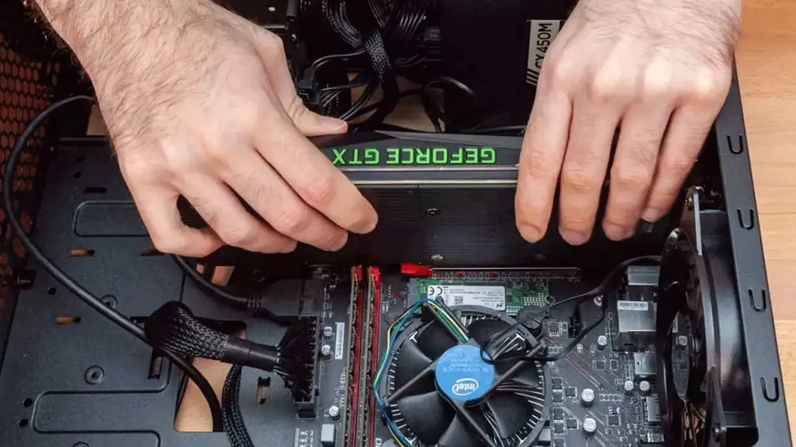
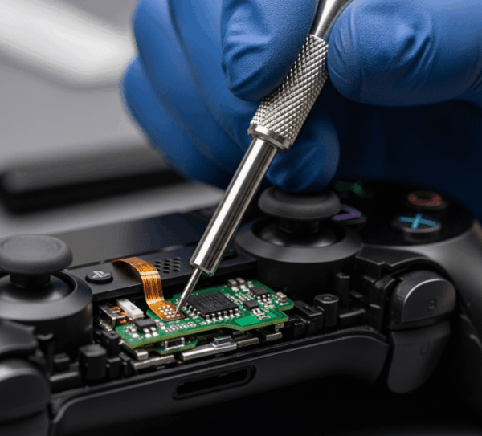
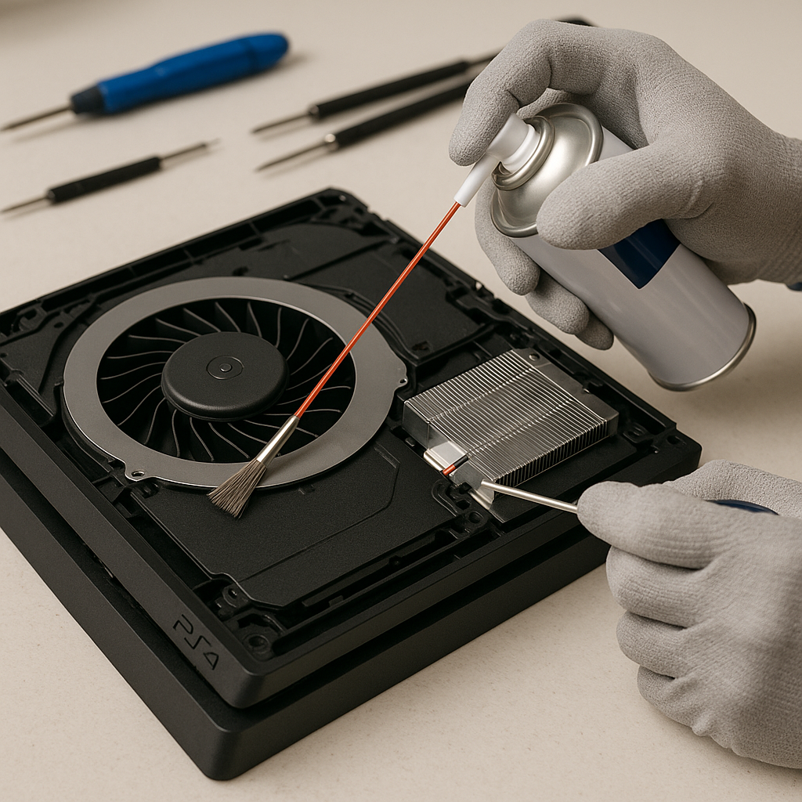

Hardware de PC
Componentes, montaje, limpieza y mantenimiento de equipos de sobremesa.
PERFIL TÉCNICO · SEVILLA
Hola, soy Francisco Javier. Tengo experiencia práctica en mantenimiento y reparación de ordenadores de sobremesa, mandos y consolas. Combino trabajo técnico personal con formación especializada y ganas de seguir aprendiendo.

Componentes, montaje, limpieza y mantenimiento de equipos de sobremesa.
Instalación y configuración de sistemas operativos, drivers y programas.
Experiencia práctica personal con consolas y mandos de PS4.
Formación en curso y motivación por ampliar conocimientos de electrónica.
TRABAJO PRÁCTICO
Una selección de las áreas en las que he trabajado de forma práctica.
HARDWARE · SOFTWARE
Experiencia práctica con ordenadores de sobremesa: revisión de componentes, mantenimiento y tareas de software.

02 / MANDOSMANDOS · ELECTRÓNICA
Reparación y mantenimiento preventivo de mandos de consolas, con revisión de componentes y comprobación de funcionamiento.

03 / CONSOLASCONSOLAS · MANTENIMIENTO
Mantenimiento y reparación de consolas, con conocimientos también de sistemas y generaciones antiguas.
SOBRE MÍ
Estoy titulado en un Ciclo Formativo de Grado Medio en Sistemas Microinformáticos y Redes. Actualmente estoy cursando un Ciclo Formativo de Grado Superior en Mantenimiento Electrónico y quiero seguir desarrollándome en el sector tecnológico. Me interesa especialmente el diagnóstico de averías, el mantenimiento de equipos y la reparación de hardware.
SIGUIENTE PASO
Estoy interesado en oportunidades junior, puestos de apoyo técnico y entornos donde seguir aprendiendo y aportar mis conocimientos prácticos.
Antes de publicar: sustituye el email de ejemplo por tu dirección real.